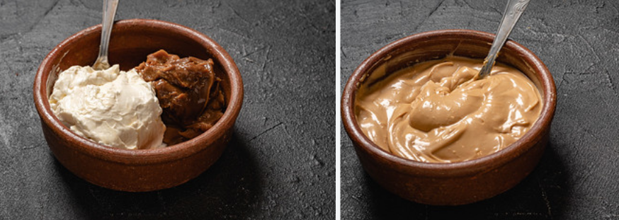

La chocotorta es una de las tortas argentinas más populares y fáciles de preparar. Nacida como una idea publicitaria para promocionar sus ingredientes en 1982, se convirtió en un clásico por su sencillez y su sabor.
|
La chocotorta es originaria de Buenos Aires, Argentina |
Mirá cómo se prepara: |
